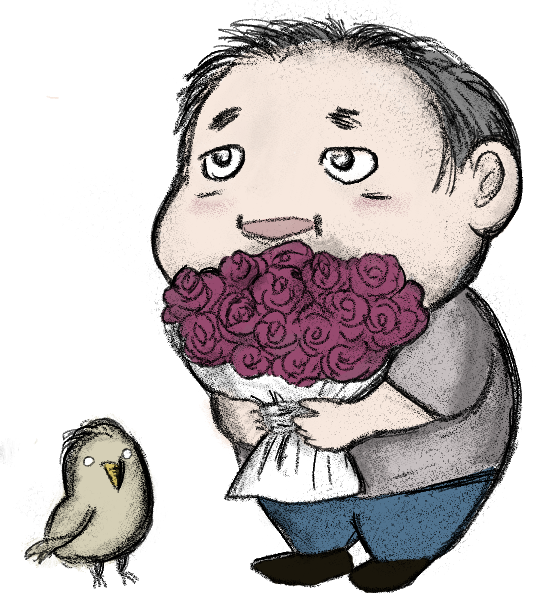
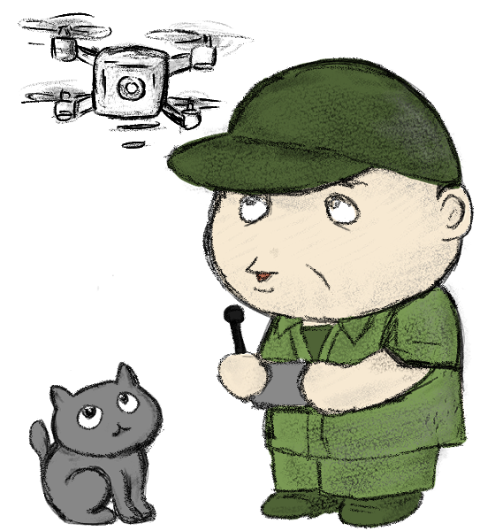
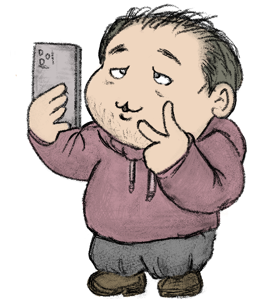
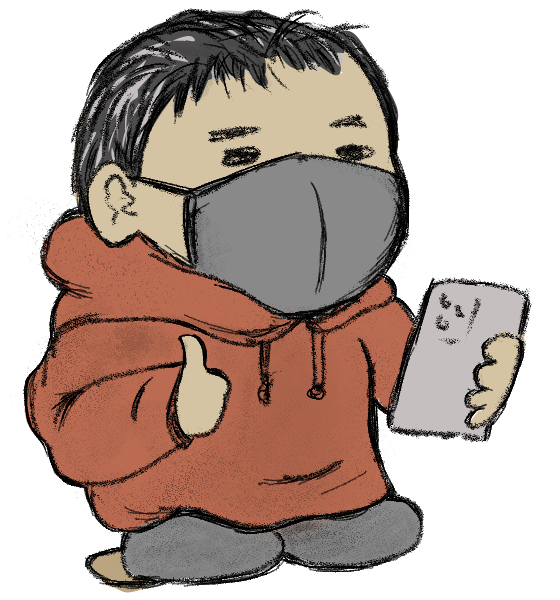
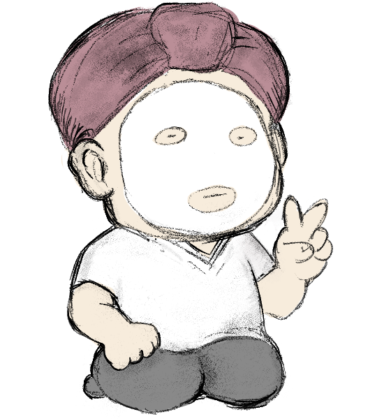
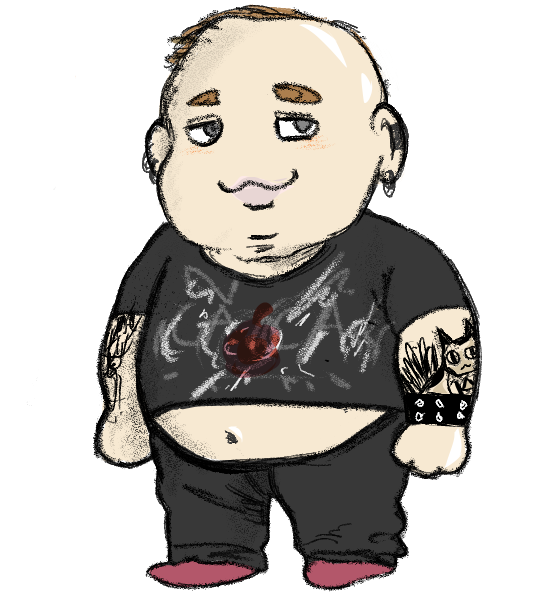
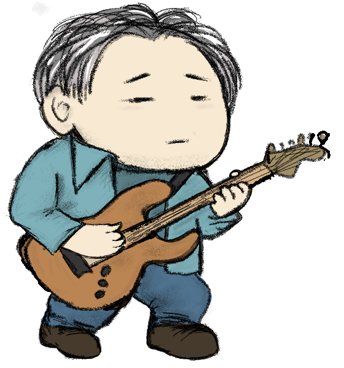
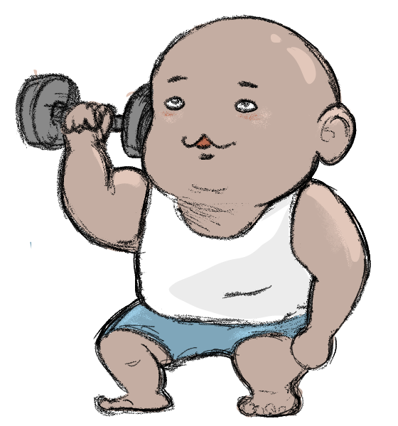
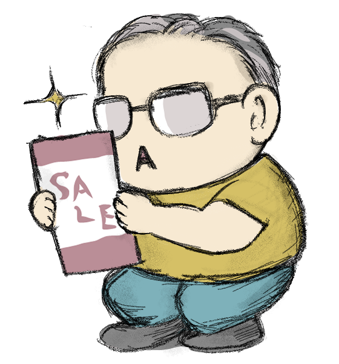
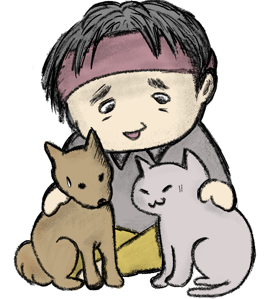

おぢ一覧（16おぢ）
おぢタイプを一覧で確認できるよ。

DSCB
甘えん坊の浪費家。頼りたい気持ちが強く、感情で動きがち。主観優位で搾取されやすいから注意。

DSCO
采配が上手いエンタメ型。みんなと楽しむのが好きで、お金も大胆。意外と冷静な場読みができる。
DSEB
共感重視のザル財布。流されやすく、NOが言えないカモ。感情と損得の間で混乱しがち。

DSEO
ゆる依存×ゆる浪費×ゆる理性。ふわっとしてるけど頭は冷静な不思議おぢ。

DFCB
頼るのはOK。でも主導権は絶対自分。財布のひもは固いけど、人との距離は近め。甘えん坊の独裁者。
DFCO
マイルール重視で節約志向でムダを嫌う。師匠を得たら名軍師。ロジック優先の慎重派。

DFEB
価値観ガチガチのマイルール派。安心とドキドキが共存。思い込みが強く頑固かも。

DFEO
俯瞰タイプ。節約が得意でフェア。依存傾向はあるものの感情に流されない現実派。

ISCB
感覚重視で自由奔放。気分で使い、気分で動く。誰にも縛られない一匹狼。
ISCO
ロジカルでクール。必要なところにお金を使い、静かな采配が得意な“冷静な秀才”。
ISEB
夢と理想の自由人。豪快に使いがちで、思い込み強め。うまい話に弱く、夢商法に注意。

ISEO
夢見るマイフェアおぢ。納得したら払うマイルール派。冷静で自由な穏やかタイプ。

IFCB
独立志向のマイルール派。節約に厳しく、一人で完結できる堅実型。
IFCO
メタ思考のひとり上手。合理性と客観視が強く、感情に流されない策士。

IFEB
理想追求の一匹オオカミ。世界観重視で節約上手。柔軟性は低いが芯のある不思議タイプ。

IFEO
超絶ミニマリスト。自立・節約・客観視が極まった超合理派。人間より動物の方が安心？